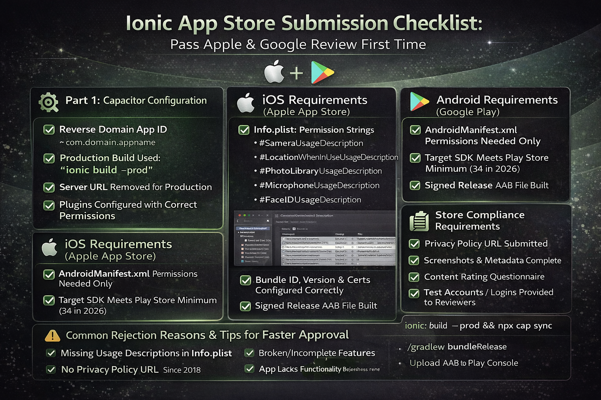

App Store
Google Play
Capacitor
iOS Deployment
Android Deployment

App Store rejection wastes weeks. I've been submitting Ionic apps since Cordova days, and the number one question I get after "how do I build it?" is "why did Apple reject it?". This checklist covers every item I verify before clicking Submit — the technical side, the store metadata, and the compliance requirements that most guides skip.
Follow this checklist in order and your first submission has a very high chance of approval. Miss any item and you will almost certainly hit a rejection. Apple's review takes 1–3 days; getting rejected and resubmitting costs you a week each time. Google Play is faster (hours) but no less strict on policy compliance.
Most common reason I see Ionic apps rejected: Missing usage description strings in Info.plist for device permissions (Camera, Location, Microphone). Apple requires a human-readable explanation for every permission your app requests — even if Capacitor requests it behind the scenes. I'll cover this in detail below.
Part 1: Capacitor Configuration
⚙️ capacitor.config.ts
App ID set to reverse-domain format
e.g. com.yourcompany.appname — must match Apple Developer and Google Play registrations exactly
App name is the final display name
This appears under the app icon on the home screen. Max 30 characters for iOS.
Server URL removed (or set to null) for production
The server.url pointing to your dev server must be removed. If present, the app loads from your dev server in production — an instant Apple rejection.
Plugins configured with correct permissions
Each Capacitor plugin that requires device access must be listed in the config with appropriate settings.
🆕 Production Build
Run ionic build --prod
Never submit a development build. Production mode enables AOT compilation, tree-shaking, and minification.
Run npx cap sync after build
Copies the latest web assets to both iOS and Android native projects and updates Capacitor plugin versions.
All console.log statements removed or guarded
Not a rejection reason, but visible logs expose internal data. Use environment checks: if (!environment.production) console.log(...)
Test the production build on a real device (not simulator)
Simulators do not accurately reflect WebView behaviour for Camera, GPS, and push notifications.
Part 2: iOS-Specific Requirements (Apple App Store)
🍎 Info.plist — Permission Strings
This is the #1 rejection reason. Every native permission your app uses must have a user-facing description string in Info.plist. Apple reviewers test these personally.
NSCameraUsageDescription
Required if your app uses Capacitor Camera plugin. Example: "This app uses the camera to capture property photos."
NSLocationWhenInUseUsageDescription
Required for Geolocation plugin. Example: "Your location is used to show nearby properties."
NSLocationAlwaysAndWhenInUseUsageDescription
Required only if app tracks location in background. Apple scrutinises this heavily — only request if genuinely needed.
NSPhotoLibraryUsageDescription
Required if Capacitor Camera allows photo library access.
NSMicrophoneUsageDescription
Required for audio recording. Even if you don't explicitly record, some video capture triggers this.
NSFaceIDUsageDescription
Required if using Capacitor Biometric Authentication plugin.
🍌 Xcode Build Settings
Bundle Identifier matches Apple Developer Portal
Xcode → Target → Signing & Capabilities → Bundle Identifier
Version number and build number set correctly
Version (e.g. 1.0.0) and Build (e.g. 1) in Xcode must match what you register in App Store Connect.
Deployment target set (minimum iOS version)
Capacitor 5+ requires iOS 13+. Set this in Xcode → Build Settings → iOS Deployment Target.
Distribution certificate and provisioning profile valid
Use "Automatically manage signing" in Xcode for simplicity, or manual provisioning for enterprise distribution.
Bitcode disabled (Capacitor 5+)
Capacitor 5 no longer supports Bitcode. Set Enable Bitcode to NO in Build Settings.
App icons for all required sizes
Use an asset generator like appicon.co. Must include 1024×1024 for App Store and all device sizes. No transparency, no rounded corners — Apple adds them.
Launch screen configured (not blank white flash)
LaunchScreen.storyboard in Xcode. A blank or jarring launch screen is not a rejection but affects user ratings.
📄 App Store Connect Metadata
Privacy policy URL provided
Mandatory since 2018. Must be a live URL with a real privacy policy. Apple will reject any app without one.
App Privacy labels completed (Data & Privacy section)
Declare every type of data your app collects — including analytics SDKs, crash reporters, and third-party libraries.
Screenshots for all required device sizes
Minimum: 6.5" (iPhone 14 Pro Max) and 5.5" (iPhone 8 Plus). iPad screenshots if your app supports iPad.
Age rating questionnaire completed accurately
Lying on the questionnaire is grounds for removal. Be accurate, especially for apps with user-generated content.
Test account credentials provided (if login required)
Apple reviewers must be able to test the full app. Provide a working demo/test account in the Review Notes. Missing this = rejection.
Part 3: Android-Specific Requirements (Google Play)
🤖 Android Manifest Permissions
Only necessary permissions declared in AndroidManifest.xml
Google Play flags apps with permissions they don't use. Capacitor plugins may add permissions you don't need — review and remove extras.
QUERY_ALL_PACKAGES permission justified (if used)
Google requires special approval for this. Most apps do not need it.
Target SDK version is current (API 34+ for 2026)
In android/app/build.gradle: targetSdkVersion must meet Google's minimum requirement (updated annually).
👑 Signed Release Build
Keystore file created and backed up securely
If you lose your keystore, you cannot update your app — ever. Back it up to multiple secure locations immediately.
Build release AAB (not APK) for Play Store
Google Play requires .aab (Android App Bundle) since August 2021. Build with: ./gradlew bundleRelease
Google Play App Signing enrolled
Recommended: Let Google manage the signing key. Upload your upload key certificate to Play Console. Provides key recovery if your upload key is compromised.
📋 Google Play Console
Privacy policy URL submitted
Mandatory. Same policy URL as iOS is fine.
Data Safety section completed
Google's equivalent of Apple's Privacy Nutrition Labels. Declare every SDK that collects or shares data.
Content rating questionnaire completed
Generates an IARC rating automatically. Required before publishing.
Feature graphic (1024×500) uploaded
Shown at the top of your Play Store listing. Required — missing it looks unprofessional and limits promotional eligibility.
At least 2 screenshots uploaded per device type
Phone screenshots required. Tablet optional but improves ranking for tablet searches.
Part 4: Common Reasons Ionic Apps Get Rejected
Rejection #1 — Broken functionality during review: Apple reviewers will test your app. If any core feature doesn't work (login fails, buttons don't respond, screens crash), they reject. Always test the exact .ipa you submit on a real device before uploading.
Rejection #2 — Missing privacy policy: Every app that collects any data (even just analytics) requires a live, accessible privacy policy URL. This has been mandatory since 2018 and still catches people out.
Rejection #3 — App resembles a web browser: Apps that are essentially a WebView wrapper around a website get rejected under Apple Guideline 4.2 (Minimum Functionality). Your Ionic app must provide genuine functionality beyond what users can do in Safari. A proper native experience (offline mode, push notifications, camera access, etc.) satisfies this.
Rejection #4 — In-app purchases not using Apple's payment system: Any digital goods sold within an iOS app must use Apple's IAP. If you're selling digital subscriptions via Stripe and bypassing Apple's payment — that's an immediate rejection.
Tip for faster approval: In the App Store Connect Review Notes field, explain clearly what your app does, who it's for, and provide test credentials. Reviewers who understand your app reject it less often. Write 3–4 sentences as if explaining to a smart stranger.
The Build Commands Reference
# Step 1: Production build
ionic build --prod
# Step 2: Sync to native projects
npx cap sync
# Step 3a: iOS — open Xcode, archive, upload
npx cap open ios
# In Xcode: Product → Archive → Distribute App → App Store Connect
# Step 3b: Android — build signed AAB
cd android
./gradlew bundleRelease
# AAB location: android/app/build/outputs/bundle/release/app-release.aab
# Upload this file in Google Play Console → Production → Create new release
Version bump reminder: Every new submission to App Store Connect must have a higher build number than the previous one. You cannot reuse a build number — even after a rejection. Increment versionCode in build.gradle and the build number in Xcode before every upload.
Need App Store Submission Help?
I handle the complete iOS and Android submission process for every Ionic app I build — targeting first-submission approval. Get a free consultation for your project.
View Ionic Development Services →

Anju Batta
Senior Full Stack Developer with 15+ years of experience. I've submitted 30+ Ionic apps to the App Store and Google Play — this checklist is what I actually use, not theory. Based in Chandigarh, India.
Hire Me for Your Ionic App →